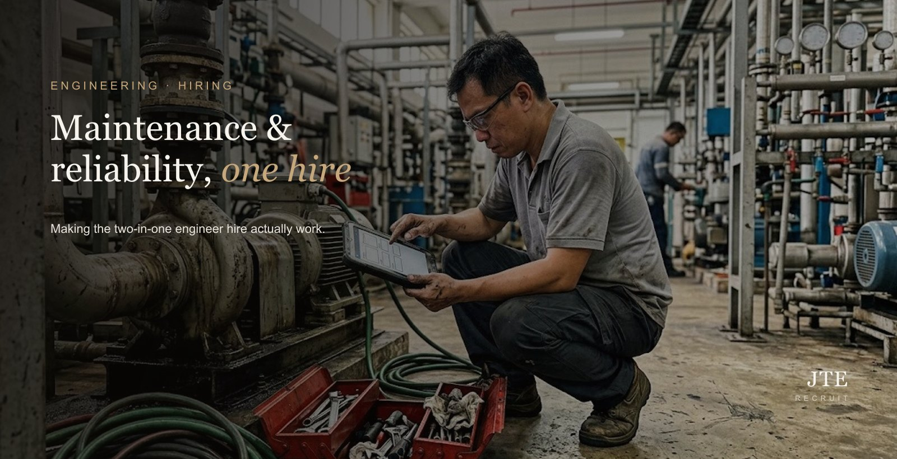
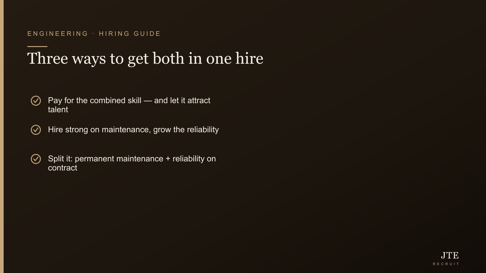

Short answer: yes, one engineer can do both — but a genuine both-in-one is senior, and priced for it. Reliability grows out of years on the maintenance floor, so the person who truly does both isn’t cheap, and pretending otherwise is exactly why these roles sit open for months. As an employer, I get the temptation to want two jobs for one salary — who doesn’t? But there are three honest ways to make it work, depending on your budget: pay for the combined skill, hire strong on maintenance and grow the reliability, or split it using contract. Let me walk you through each.
One of the most common engineering briefs we get sounds simple: “I want someone who can handle maintenance and reliability.” One seat, both jobs. It’s a completely reasonable thing to want — but how you go about it decides whether you fill the role or leave it open for six months while the equipment keeps breaking.

Maintenance vs reliability: what you’re actually asking for
They sound like the same job. They aren’t. Maintenance engineering keeps equipment working — reactive (fixing what broke) and preventive (servicing on a schedule so less breaks). Reliability engineering goes further: predicting failures before they happen, finding the root cause of recurring ones, and designing the weak points out so they stop coming back. Maintenance keeps you running today; reliability reduces how often you have to fight to.
Understanding that gap matters, because it’s exactly why a genuine “both” person is harder and pricier to hire than the job ad makes it sound.
Why a true “both-in-one” engineer costs more
Reliability almost always grows out of the maintenance floor. You rarely meet a strong reliability engineer who didn’t spend years doing hands-on maintenance first — that’s where they learned how equipment actually fails. So an engineer who can genuinely do both tends to be more experienced, and priced accordingly. That’s not a market quirk to be annoyed at; it’s just how the skill is built. Fighting it — holding out for a senior both-in-one at a maintenance-only salary — is the single most common reason these roles sit open for months.
The good news: there are three honest ways to solve it, and the right one comes down to your budget and your timeline.
Option 1 — Pay for the combined skill (and use it to attract, not just spend)
If you genuinely need both from day one, budget for one experienced engineer who does both. Here’s the upside most people miss: framing the role as “own both maintenance and reliability” is actually attractive to good engineers. It’s two disciplines in one seat — more scope, more to learn, more ownership. Ambitious people take that over a narrow maintenance-only job. So the premium isn’t only a cost; positioned right, it’s what lands you the stronger candidate in the first place.
If you go this route, write the advert around the ownership and the growth, not just the checklist of duties. The engineers you most want are the ones who’ll be drawn to a role where they get to move a plant from firefighting to genuine reliability — and put their name on the result.
Option 2 — Hire strong on maintenance, then grow the reliability
If the budget won’t stretch to a senior both-in-one today, do it the way the skill is built anyway: hire someone solid on maintenance, then develop them into reliability — certification, structured training, time. You get a capable person in the seat sooner, at a fairer entry cost, and you build the reliability capability in-house rather than renting it.
Two things make this work better than people expect. First, people stay when they can see they’re growing — offering a clear path from maintenance into reliability is a retention tool, not just a hiring one. Second, some of that training and career development can be part-funded by government schemes, so you may not be carrying the whole bill yourself. It’s worth checking what you qualify for before you assume the cost. (Singapore’s hiring grants, in plain English.)
Option 3 — Split it, with flexibility
Sometimes the cleanest answer is to keep day-to-day maintenance running with a permanent hire, and bring reliability in as a project or on contract — a reliability engineer to fix the recurring failures and set up the systems, without committing to a permanent second headcount. When it proves its worth, you extend or convert them to permanent.
This suits employers who know they have a reliability problem but aren’t sure it’s a full-time, forever role — or who want to see the results before adding permanent headcount. (How contract and contract-to-perm staffing works.)
What to look for, whichever route you take
- A number they moved. Uptime or OEE improved, downtime cut, or a recurring failure they killed for good. Real reliability work shows up in outcomes.
- Root-cause examples. Ask them to walk you through one, start to finish — not just name the method (RCA, FMEA). The story tells you if they’ve actually done it.
- The equipment they know. Rotating equipment, utilities, your specific production lines — match matters more than a generic CV.
- Reactive vs reliability mindset. A firefighter keeps you running; a reliability thinker stops the fires starting. Know which you’re buying, and which one the role actually needs.
What should you budget?
It varies a lot by seniority and industry — a maintenance-focused engineer sits well below an experienced engineer who genuinely does both. Rather than a single misleading number, we keep current ranges by role and level in our engineering salary guide, so you can spec the role to what you can realistically pay before you go to market.
The bottom line
“Maintenance and reliability in one” is very doable — but as a budget-and-plan decision, not a job ad you post and hope. Decide which of the three routes fits your money and your timeline, write the role honestly around it, and you’ll fill it. Try to get a senior both-in-one on the cheap, and you’ll be reading this again in six months with the role still open.
What I’d actually do
If it were my plant and the budget was tight, I’d hire a solid maintenance engineer and grow the reliability side over time — it’s how the skill gets built anyway, it’s cheaper to get someone into the seat, and people stay when they can see themselves levelling up. The one thing I wouldn’t do is hold out for a senior both-in-one at a maintenance-only salary and leave the role empty while the machines keep breaking down. That’s bo bian (a no-win) — you lose money either way, you just don’t see the “empty seat” cost on an invoice.
The bottom line
“Maintenance and reliability in one” is very doable — as a budget-and-plan decision, not a job ad you post and then pray over. Pick the route that fits your money and your timeline, write the role honestly around it, and you’ll fill it with someone who actually sticks around.
Frequently asked questions
Can one engineer do both maintenance and reliability?
Yes, but a genuine both-in-one hire is usually a more senior, more expensive engineer — because reliability skill grows out of years of hands-on maintenance experience first. If your budget is tight, the realistic routes are to hire someone strong on maintenance and develop the reliability side, or to keep maintenance permanent and bring reliability in on contract.
What is the difference between a maintenance engineer and a reliability engineer?
Maintenance engineering is about keeping equipment working — both fixing breakdowns and servicing on a schedule so fewer things break. Reliability engineering goes a step further: predicting failures before they happen, finding the root cause of recurring ones, and designing the weak points out entirely. Maintenance keeps you running today; reliability reduces how often you have to.
Can I train a maintenance engineer to become a reliability engineer?
Often yes, and it is a common path — reliability is usually built on a maintenance foundation anyway. You hire someone solid on maintenance, then invest in certification, structured training and time. It is slower than hiring the finished article, but cheaper to enter and it builds loyalty. Some of that training may be part-funded by Singapore government schemes.
Should I hire a reliability engineer permanent or on contract?
If the need is ongoing, permanent usually makes sense. If you mainly need to fix recurring failures and set up better systems, a contract or project-based reliability engineer can do that without a permanent second headcount — and you can convert them to permanent if it proves its worth.
How much does a maintenance or reliability engineer cost in Singapore?
It depends heavily on seniority and industry — a maintenance-focused engineer sits lower than an experienced reliability engineer who does both. Rather than quote a single figure, we keep current ranges by role and level in our engineering salary guide, so you can spec the role to what you can actually pay.
How do I know if I even need reliability engineering?
A simple test: if unplanned breakdowns are costing you real production time, or the same failures keep coming back, you are paying for the absence of reliability engineering already — just in downtime rather than salary. That is usually the point where the investment pays for itself.
This is exactly the kind of thing we talk through with employers before we source a single CV — which route fits your budget, and who’s actually out there for it. Tell us what you’re running and what you can spend, and we’ll give you a straight answer. More on how we hire for engineering.